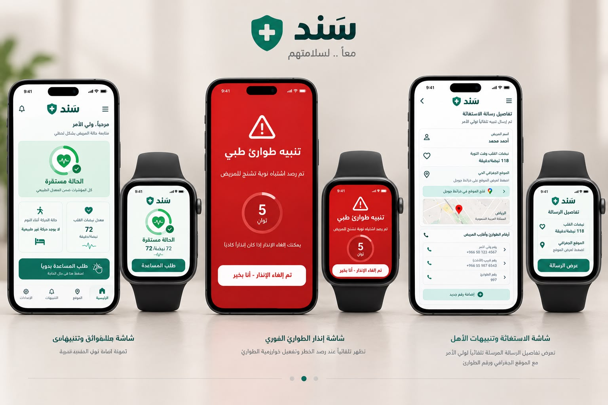

سَند نظام ذكي متكامل بين الهاتف والساعة الذكية، يراقب المؤشرات الحيوية للمريض لحظيًا، ويكتشف اشتباه نوبة التشنج تلقائيًا، ثم يرسل تنبيه طوارئ فوري لولي الأمر مع الموقع الجغرافي الحي - في ثوانٍ معدودة.
مرضى الصرع ومقدمو الرعاية يواجهون تحديًا حقيقيًا: النوبة قد تحدث دون أي شاهد، وكل دقيقة تأخير في التنبيه تزيد المخاطر.
كثير من الحالات تقع أثناء النوم أو عندما يكون المريض بمفرده، دون أن ينتبه أحد.
الوقت الذي يستغرقه اكتشاف الحالة وإبلاغ العائلة أو الطوارئ قد يكون حاسمًا.
العائلة تحتاج معرفة مكان المريض فورًا لتوجيه المساعدة أو فرق الطوارئ بسرعة.
لوحة تحكم واحدة تجمع المراقبة، الإنذار الذكي، والتواصل الفوري مع العائلة وجهات الطوارئ.
تتبّع مستمر لنبضات القلب وحركة الجسم أثناء النوم من الساعة الذكية والهاتف.
خوارزمية ترصد الأنماط غير الطبيعية في المؤشرات وتفعّل إنذار الطوارئ فورًا.
مهلة 5 ثوانٍ لإلغاء الإنذار يدويًا قبل إرساله، لتفادي التنبيهات الكاذبة.
رسالة تلقائية تتضمن اسم المريض، نبضات القلب، والموقع الجغرافي الحي.
إضافة عدد غير محدود من أرقام الأقارب وجهات الطوارئ للتواصل السريع.
تجربة متكاملة بين تطبيق الهاتف والساعة الذكية، متزامنة لحظيًا عبر الويب.
أربع خطوات تفصل بين اشتباه النوبة ووصول المساعدة.
الساعة والهاتف يراقبان نبضات القلب وحركة الجسم بشكل مستمر.
عند رصد نمط غير طبيعي، يبدأ عدّ تنازلي مدته 5 ثوانٍ.
إن لم يُلغَ الإنذار، تصل رسالة فورية لولي الأمر مع الموقع ونبضات القلب.
ولي الأمر يطّلع على التفاصيل ويتواصل مع أقرب جهة طوارئ فورًا.
استعرض أهم شاشات تطبيق سَند، وافتح كل واحدة في نافذة مستقلة لتجربتها بنفسك.

حالة المريض، نبضات القلب، وحركة النوم، مع زر طلب المساعدة اليدوي.
فتح المعاينةتظهر تلقائيًا عند اشتباه نوبة، مع عدّ تنازلي 5 ثوانٍ لإلغاء الإنذار الكاذب.
فتح المعاينةتفاصيل الرسالة المرسلة تلقائيًا: الموقع الجغرافي وأرقام الطوارئ.
فتح المعاينةافتح النظام الآن وجرّب لوحة التحكم، إنذار الطوارئ، وشاشة تنبيهات الأهل بنفسك.
جرّب النظام الآن